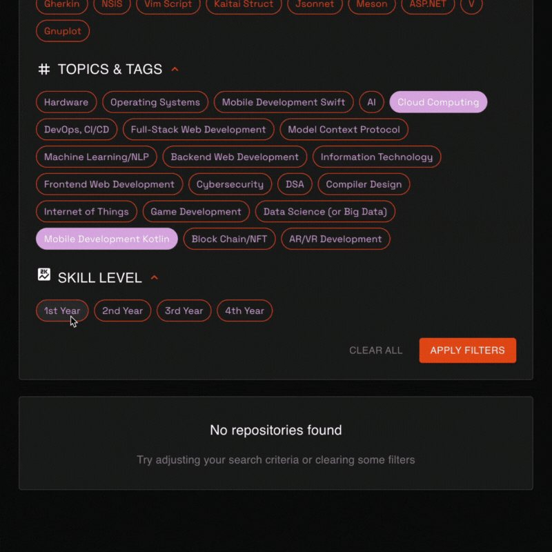

Swipe, not a list

A wall of results is where people give up. One card is one small decision.
GitHub has millions of repos and no starting point for students. In Salesforce's Futureforce Tech Launchpad, our team of three built Branch Out: pick your year, languages and interests, then swipe.
Students want open source experience, but search shows the biggest, scariest repos first.
Pick your year, languages and interests, then swipe through repos matched to you, each with an AI summary.
Swipe, not a list. One repo, one decision.
Everyone says contribute to open source. Then you open GitHub and see millions of repos with no idea which ones want beginners.
Search sorts by stars, so the top results are the most intimidating ones.
We interviewed a few students in our Futureforce cohort about trying to make a first contribution.
Finding a project should feel like browsing, not searching.


A wall of results is where people give up. One card is one small decision.

"Intermediate" means something different to everyone. Everyone knows their year.

READMEs are written for maintainers. I built the Gemini client that explains each repo in plain language.
My part, straight from my commits.
Working through pull requests on a team of three taught me to keep changes easy to review.
It kept three people's work feeling like one product.
Use which repos students save to tune the matches.
Point students to a good first issue, not just a repo.